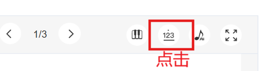
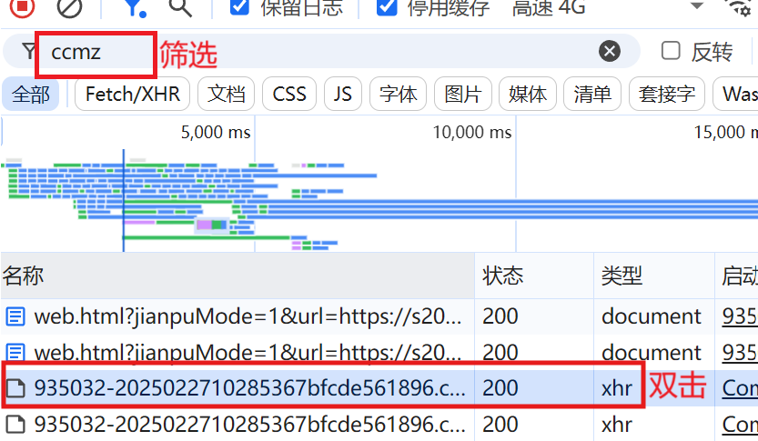

ccmz解析工具
请选择ccmz文件或拖入此处
解析步骤将在本地运行
选择文件
松手即可使用此文件
对于电脑用户，可以将此书签直接拖动到书签栏：
ccmz解析工具
在官网打开曲谱详情页后点击可直接下载
Tip: 按Ctrl+Shift+B可显示/隐藏浏览器书签栏，拖拽添加后会自动跳转到官网搜索页
免责声明
请确保你已经购买此曲谱或已经开通vip再转换，转换后的文件
仅供个人学习使用
，请勿传播，造成后果概不负责。
ccmz获取方式
前往虫虫钢琴官网（电脑版），搜索曲谱并打开，点击曲谱播放栏简谱模式；

按F12打开开发人员工具（DevTools），切换网络面板，刷新页面；
在过滤输入框中输入ccmz，双击列表中类型为xhr的文件即可下载。

操作
音量对比度：
0.5x
1x
2x
3x
音符长度缩放：
0.25x
0.5x
1x
2x
文件名：
.mid
取消
确定
停止
关闭
下载